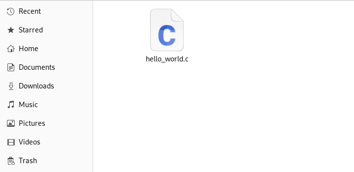
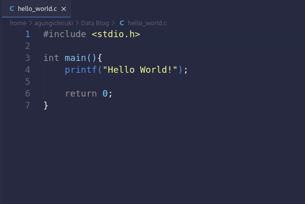
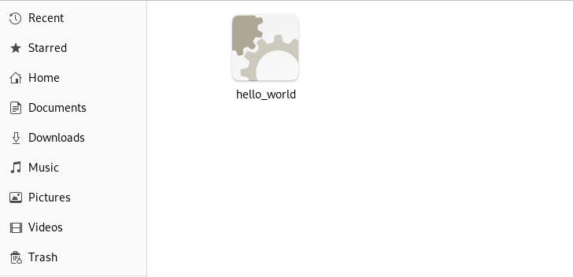

1B. Source Code, Compiler, dan Binary File
Sebelum kita memulai belajar bahasa pemprograman C, sebaiknya kita mengenal dulu apa itu source code, compiler, dan binary file. Ini penting karena dalam belajar dan membuat program dengan bahasa C, kita tidak akan pernah lepas dari ketiga hal ini.
Source Code
Source code atau kode sumber adalah file teks yang berisi instruksi-intruksi yang akan dikerjakan komputer dalam tata bahasa C. Tetapi, tidak seperti file teks biasa yang memiliki ekstensi .txt, source code bahasa pemprograman C memiliki extensi .c dan .h (untuk perbedaan .c dan .h akan kita bahas nanti di tutorial selanjut-nya).


Compiler
Source code yang kita buat masih belum bisa dijalankan oleh komputer, karena komputer hanya mengenali bahasa mesin. Untuk itulah kita butuh program compiler yang bertugas untuk menkonversi atau menterjemahkan instruksi dalam bahasa c yang dipahami manusia menjadi bahasa mesin yang dipahami oleh komputer. Proses konversi ini disebut kompilasi.
Binary File
Dari proses kompilasi yang dilakukan compiler, akan menghasilkan file binary yang dapat dijalankan oleh komputer. File binary ini dapat langsung kita jalankan dan format ekstensi-nya mengikuti sistem operasi yang kita gunakan saat proses kompilasi. Seperti contoh, saat anda melakukan proses kompilasi di sistem operasi Microsoft Windows, maka ekstensi file binary-nya adalah ".exe".

Setelah berkenalan secara singkat dengan Source Code, Compiler, dan Binary File, berikutnya kita akan menyiapkan apa-apa saja yang kita butuhkan untuk memulai belajar bahasa C. Kita akan mendownload dan menginstall text editor/IDE dan compiler di bagian Persiapan Belajar Bahasa C